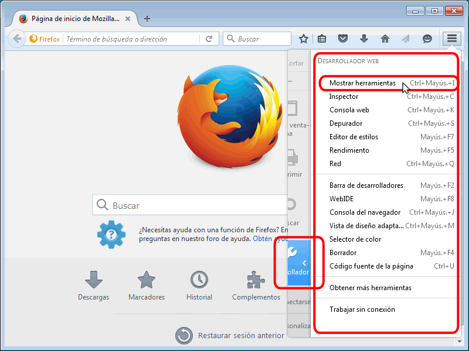

Herramientas para Desarrollador Web
Seguramente la extensión de Firefox más popular para desarrolladores web ha sido siempre Firebug, que permite analizar en profundidad muchos aspectos de una página web.
En 2010, Firefox decidió incluir sus propias herramientas para desarrolladores web, basándose sobre todo en Firebug (y contratando a algunos de los autores de Firebug). Desde 2011 se han ido incluyendo nuevas herramientas y el desarrollo sigue a buen ritmo.
A partir de Firefox 16 (publicado en octubre de 2012), Firefox incluye una ventana de Herramientas para Desarrollador Web que unifica su acceso.
En el blog Mozilla Hacks se pueden consultar las novedades sobre estas herramientas. Uno de los objetivos es que las herramientas de desarrollador incorporen todo lo que hace Firebug.
Abrir la ventana de Herramientas para desarrollador web
La ventana de Herramientas para desarrollador web se puede abrir de varias maneras:
- el atajo de teclado Ctrl+May+I
- mediante el menú (para mostrar el menú hay que pulsar la tecla Alt) podemos abrir tanto la ventana de herramientas como herramientas individuales:

- el botón "Abrir menú" de la barra de dirección y eligiendo la opción Desarrollador ...

... se abrirá un menú de opciones similar al menú :

La ventana de Herramientas para desarrollador web se abre en la parte inferior de Firefox. Esta ventana personalizable da acceso directo a casi todas las herramientas disponibles (y se pueden incluir el resto en caso necesario).

Cerrar la ventana de Herramientas para desarrollador web
La ventana de herramientas para Desarrollador Web se puede cerrar de varias maneras:
- el atajo de teclado Ctrl+May+i
- haciendo clic en el icono Cerrar situado en la parte superior derecha de la ventana de Herramientas de desarrollador web

Elementos de la ventana de Herramientas para desarrollador web
La ventana de Herramientas para desarrollador web contiene tres partes. De arriba a abajo:
- menú de herramientas, que permite elegir las distintas herramientas y configurarlas.
- herramienta propiamente dicha (en la captura siguiente se muestra el resultado de la herramienta Inspector)
- consola, que permite ejecutar comandos de JavaScript sobre los elementos de la página